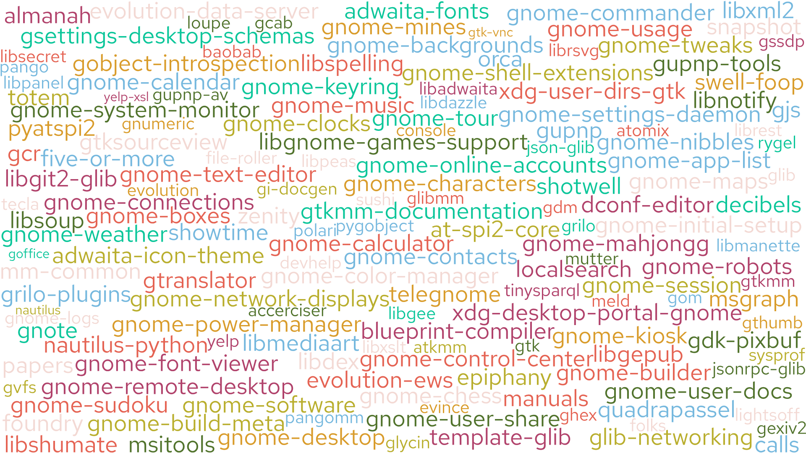

class: title-slide # GNOME Infrastructure State of the Union ## GUADEC 2025 ### Andrea Veri, Principal Site Reliability Engineer, Red Hat ### Stefan Peknik, Associate Site Reliability Engineer, Red Hat --- ## Some history * For over 15 years, GNOME has been hosted in a Red Hat DC as part of the "community cage" * Red Hat has been paramount for the infrastructure sustainability providing hosting, hardware, connectivity * We evolved from hosting applications on top of bare metal servers to virtual machines and finally containers --- ## Growing Pains Our 2020 OpenShift 4 setup had several architectural challenges: * **Hyperconverged Setup:** Storage, control plane, and workloads all ran on just 3 nodes. * **Unsupported Storage:** An external Ceph cluster was used, which is not supported by OpenShift Data Foundation (ODF). * **Network Limitations:** The private L2 network lacked a proper L3 gateway, requiring a manually-maintained next-hop for internet access. * **No Redundancy:** A single point of failure on network switches meant downtime during upgrades. --- ## Challenges turning into problems As our community grew (60k+ GitLab users, 50TB monthly traffic), these issues started to impact stability: 1. **Upgrade Downtime:** The unsupported storage setup caused nodes to get stuck during every OpenShift upgrade, bringing down the entire cluster API. 2. **Connectivity Outages:** The manually-managed NAT machine for internet access was a single point of failure. If it went down for maintenance, connectivity was lost. --- ## A New Path Forward * With the FY25 budget season approaching, we lacked the funds to fix the gaps in our on-premise architecture. * We reached out to the **AWS Open Source Program**, which we have been leveraging for S3 sponsorship for years * We received a substantial sponsorship to fully transition GNOME’s Infrastructure to the public cloud. --- ## Why Public Cloud? 1. **Scalability:** Easily scale our worker node pool up or down as needed. 2. **Modern Networking:** Full control over a redundant, high-speed software-defined network. 3. **Managed Storage:** No more self-managed Ceph clusters. We now use EBS, EFS, and S3 for reliability and scalability. 4. **Lower Latency:** In-VPC load balancers reduce latency between services. 5. **Advanced Security:** Access to services like AWS Shield for advanced DDoS protection. --- ## Major achievements #1 * All the applications that were previously hosted on premise are now in AWS * Migration to sso.gnome.org, make 2FA mandatory * For GitLab, we made sure repositories were migrated to an EBS volume to increase IO throughput and bandwidth * Migrated away our backup mechanism away from rdiff-backup into AWS Backup service (which handles both our AWS EFS and EBS snapshots) * Retired our NSD install and migrated our authoritative name servers to CloudNS (it comes with multiple redundant authoritative servers, DDOS protection and automated DNSSEC keys rotation and management) * We moved away from Ceph and the need to maintain our own storage solution and started leveraging AWS EFS and EBS --- ## Major achievements #2 * We deprecated Splunk and built a solution around promtail and Loki in order to handle our logging requirements * We deprecated Prometheus blackbox and started leveraging CloudNS monitoring service which we interact with using an API and a set of CI/CD jobs we host in GitHub * We archived GNOME’s wiki and turned it into a static HTML copy * We retired our mirroring infrastructure based on Mirrorbits and replaced it with our CDN partner, CDN77 * We decoupled GIMP mirroring service from GNOME’s one, GIMP now hosts its tarballs (and associated rsync daemon) on top of a different master node, thanks OSUOSL for sponsoring the VM that makes this possible! --- ## Minor achievements #1 * DNS management using APIs and CI/CD jobs hosted in GitHub * Deprecated our former internal DNS authoritatives based on FreeIPA. We are now leveraging internal VPC resolvers and Route53 Private zones * Retired idm0{1,2} and redirected them to a new FreeIPA load balanced service at https://idm.gnome.org * All of our GitLab runners fleet are now hourly kept in sync using AAP (Ansible roles were built to make this happen) * We upgraded Cachet to 3.x series and fixed dynamic status.gnome.org updates (via a customized version of cachet-monitor) * OS Currency: we upgraded all our systems to RHEL 9 * Replaced NRPE with Prometheus metrics based logging, checks such as IDM replication and status are now handled via the Node Exporter textfile plugin * Migrated download.qemu.org (yes, we also host some components of QEMU’s Infrastructure) to use nginx-s3-gateway, downloads are then served via CDN77 And... Welcome GNOME Release Service! --- ## The Old Way of Releasing For decades, releasing a GNOME module was a manual, multi-step process. A maintainer had to [1]: 1. Manually create a release tarball and store it locally. 2. `scp` the tarball to `master.gnome.org`. 3. `ssh` into the server using their personal shell account. 4. Run the `ftpadmin` script to publish the release. This system had significant drawbacks: - **It was mostly manual**, increasing the chance of human error. - **No Central Audit Trail:** Release actions weren't tied to a central identity system like GitLab, making it hard to track *who* released *what* and *when*. - **No Authorization Checks:** The script didn't verify if the user was a maintainer for the specific module being released, creating a risk of accidental or malicious cross-project releases. --- ## The Motivation for Change The legacy process was no longer sustainable, especially given `ftpadmin`'s legacy: * Python 2, outdated technologies. * Dates back to 2011. * Grew: 400 -> ~2000 lines of code. * Hard to maintain & modify. We needed a modern solution that would deliver: - **Security:** Eliminate the need for direct SSH access and introduce a robust, auditable authentication system. - **Traceability:** Create a clear, immutable log for every release, linking it directly to a specific developer and code commit. - **Maintainability:** Replace an aging, monolithic script with a modern and testable API. - **Efficiency:** Automate the entire process to reduce manual work and the potential for errors. --- ## The Solution: A Modern Release API We developed the **GNOME Release Service** [2], a new, centralized API that automates and secures the entire release process. * **Language & Framework:** Python 3 with the FastAPI web framework. * **Deployment:** The service is containerized and deployed on GNOME's OpenShift cluster. The service acts as a **secure facade** for release infrastructure. --- ## The New Architecture The core principle is simple: **Shift the release process from manual server commands to automated, authenticated CI/CD pipelines**. Maintainers no longer need direct access to the release server. Instead, they interact with a tool they already use every day: **GitLab**. Our new architecture is built on modern, secure, and automated principles. 1. A **maintainer pushes a signed Git tag** to their module's repository. 2. This automatically triggers a **GitLab CI pipeline**. 3. The pipeline builds the release tarball and generates a short-lived **ID Token (JWT)**. 4. The CI job sends the tarball and the JWT to the **GNOME Release Service API**. 5. The API **validates the token**, verifies the request, and publishes the release. --- ## Secure by Design: Authentication The cornerstone of the new system's security is **OpenID Connect (OIDC)**, using tokens generated by GitLab [3]. - **GitLab CI ID Tokens (JWTs):** When a release pipeline runs, GitLab generates a **JSON Web Token (JWT)**. This is a secure, digitally signed credential that is: - **Short-lived** (expiring in minutes). - **Scoped** to the specific pipeline run. - **Impossible to forge** without GitLab's private key. The JWT includes information about which project triggered the pipeline and much more, allowing the Release Service to authorize releases only for the originating project. --- ## How Validation Works: The JWKS Magic So, how does the Release Service trust the JWT from GitLab? 1. The token is signed by GitLab's **private key**. 2. The Release Service API fetches GitLab's public **JSON Web Key Set (JWKS)**, which contains the corresponding public keys [4]. 3. It uses the public key to verify the signature on the JWT. If the signature is valid, the service trusts the claims within the token. This means **no shared secrets, no long-lived API keys, and no passwords.** --- ## What This Means for Maintainers The setup is straightforward. Your `.gitlab-ci.yml` needs two parts: 1. A job that builds the release tarball and saves it as an artifact 2. Include the release component ```yaml - component: gitlab.gnome.org/GNOME/citemplates/release-service@master inputs: dist-job-name: "name-of-the-build-job" ``` After this one-time setup, making a release is as simple as pushing a signed tag. The component then takes care of sending the release tarball to the Release Service API and performing the GitLab release. --- ## Community Rollout and Adoption The GNOME Release Service is now the **official, only supported method** for module releases. The transition was announced on the **GNOME Discourse forum** [5], with documentation available in the Maintainer's Handbook [6]. This marks a successful transition to a modern, secure, and fully automated platform. --- class: center ## 150+ Projects Use the Release Service  --- ## Sponsors * From November 2024 and ongoing, AWS will provide sponsorship and funding to the GNOME Project to sustain the majority of its infrastructure needs * Red Hat kindly sponsored subscriptions for RHEL, Openshift, AAP as well as hosting, bandwidth for the GNOME Infrastructure throughout 2024 * CDN77 provided unlimited bandwidth / traffic on their CDN offering * Fastly renewed their unlimited bandwidth / traffic plan on their Delivery/Compute offerings * GIMP is sponsoring a GitLab Runner (Heztner EX44 instance) * We received a 2k grant from Microsoft which we are using for an Azure ARM64 GitLab runner * We received an ARM64 bare metal from OSUOSL as well as 2 additional GitLab runners * We are now able to run CI/CD on Mac OS thanks to MacStadium * Canonical is continuing their GitLab runners sponsorship (2x Heztner EX44 instances) * and also thanks to DigitalOcean for the continued hosting and sponsorship of additional CI/CD resources --- class: center # Thank You ## Questions? --- ## References [1] <span style="word-break: break-all; font-size: 90%;">https://gitlab.gnome.org/Teams/Websites/handbook.gnome.org/-/blob/c3db9f31596d0d5090c17e0ee6d1261f100275cf/source/maintainers/making-a-release.rst</span> [2] https://gitlab.gnome.org/Infrastructure/openshift-images/gnome-release-service [3] https://docs.gitlab.com/ci/secrets/id_token_authentication/ [4] https://gitlab.gnome.org/oauth/discovery/keys [5] https://discourse.gnome.org/t/gnome-release-service-ftpadmin-replacement-coming-11th-december/25487 [6] https://handbook.gnome.org/maintainers/release-pipeline.html